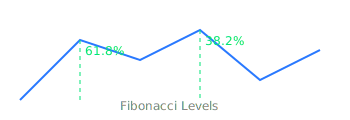
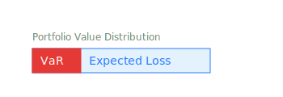

Beginner to Expert Day Trading Guide
Your comprehensive, interactive roadmap to mastering day trading
Beginner Level
What is Day Trading?
- Definition: Day trading is the practice of buying and selling financial instruments (stocks, forex, crypto, etc.) within the same trading day. No positions are held overnight.
- Goal: Profit from short-term price fluctuations, often using leverage and technical analysis.
- Real-life Example: Jane buys 100 shares of Tesla at $200 at 9:35 AM and sells them at $205 at 2:15 PM, making a $500 profit (minus fees).
- Contrast: Unlike investing, which focuses on long-term growth, day trading is about rapid, frequent trades.
Diagram: Day Trading vs. Investing
Basic Terminology
- Bid/Ask: The price buyers are willing to pay (bid) and sellers are asking (ask). Example: Bid $99.95 / Ask $100.05
- Spread: The difference between the bid and ask price. Example: $0.10 spread
- Volume: The number of shares/contracts traded in a period. High volume = more liquidity
- Volatility: The degree of price fluctuation. High volatility = bigger price swings
- Liquidity: How easily an asset can be bought/sold without affecting its price. Blue-chip stocks are highly liquid
- Order Types: Market, limit, stop-loss, stop-limit, trailing stop, etc. See interactive below
- Margin: Borrowed funds from a broker to trade larger positions. Example: 4:1 intraday margin
- Leverage: Using borrowed money to increase potential returns (and risk). Example: $2,500 cash = $10,000 buying power
- PnL: Profit and Loss. Track this for every trade
- Slippage: The difference between expected and actual execution price.
- Commission: Fee charged by broker per trade.
- Short Selling: Selling borrowed shares to profit from a price drop. Example: Shorting TSLA at $200, buying back at $190.
- Stop-Limit Order: Becomes a limit order when a trigger price is hit.
Understanding Financial Markets
- Stock Market: Shares of companies traded on exchanges (NYSE, NASDAQ, etc.). Example: Buying AAPL on NASDAQ
- Forex Market: Trading currency pairs (EUR/USD, USD/JPY, etc.). Largest market by volume
- Futures Market: Contracts to buy/sell assets at a future date. Example: E-mini S&P 500 futures
- Crypto Market: Trading digital currencies (BTC, ETH, etc.). 24/7 market, high volatility
- Each market has unique trading hours, volatility, and regulations.
Diagram: Market Hours (Eastern Time)
+-------------------+-------------------+-------------------+
| Market | Opens | Closes |
+-------------------+-------------------+-------------------+
| NYSE/NASDAQ | 9:30 AM | 4:00 PM |
| Forex (London) | 3:00 AM | 12:00 PM |
| Forex (NY) | 8:00 AM | 5:00 PM |
| Crypto | 24/7 | 24/7 |
+-------------------+-------------------+-------------------+
Diagram: Market Types
Choosing a Broker & Trading Platform
- Look for regulated brokers with low fees, fast execution, and good customer support.
- Popular platforms:
TD Ameritrade,Interactive Brokers,MetaTrader,TradingView,Thinkorswim,Webull,eToro. - Check for demo accounts to practice without risking real money.
- Understand the broker's margin requirements and leverage policies.
- Real-life Example: Interactive Brokers offers low commissions and access to global markets, but has a steeper learning curve than Robinhood.
- Tip: Always check for hidden fees (inactivity, data, withdrawal).
Broker Comparison Table
| Broker | Commissions | Markets | Demo Account | Leverage |
|---|---|---|---|---|
| TD Ameritrade | $0 (stocks/ETFs) | Stocks, Options, Futures | Yes | 4:1 intraday |
| Interactive Brokers | Low | Global | Yes | 4:1 intraday |
| MetaTrader | Varies | Forex, CFDs | Yes | Up to 50:1 |
Setting Up Your Trading Environment
- Stable internet connection and a reliable computer or mobile device.
- Dual monitors can help track multiple charts/news feeds.
- Quiet, distraction-free workspace.
- Install trading software and set up watchlists.
- Example Setup: Laptop + external monitor, TradingView for charts, Discord for news, Excel for journaling.
Risk Disclaimer
- Day trading is risky and not suitable for everyone.
- Never trade with money you cannot afford to lose.
- Start small and use demo accounts to practice.
- Statistic: Over 80% of day traders lose money. Most successful traders have years of experience and strict discipline.
Types of Financial Instruments
- Stocks: Ownership in a company. Example: Buying 10 shares of MSFT
- ETFs: Funds that track indexes or sectors. Example: SPY (S&P 500 ETF)
- Options: Contracts giving the right to buy/sell at a set price. Example: Buying a call option on AAPL
- Futures: Agreements to buy/sell assets at a future date. Example: E-mini S&P 500
- Forex: Currency pairs trading. Example: EUR/USD
- Cryptocurrencies: Digital assets like BTC, ETH, etc.
How Orders Work (Interactive)
Drag and drop the order types to their correct definitions:
True or False: Quickfire
Beginner Quiz
Real-World Scenario
Scenario: You have $5,000 in your account. You want to buy 100 shares of a stock trading at $50. Your broker offers 4:1 intraday margin. Can you make this trade? What are the risks?
Persistent Knowledge Check
Intermediate Level
Market Mechanics & Order Types
- Order Routing: Orders can be routed to different exchanges or market makers. Example: Routing to NYSE vs. ARCA can affect fill speed and price.
- Order Book: Shows all buy/sell orders at different prices. Level II data reveals market depth.
- Real-life Example: Placing a limit order for 500 shares at $10.50 and watching it partially fill as sellers appear at that price.
- Order Types: Market, limit, stop, stop-limit, trailing stop, OCO (One Cancels Other), bracket orders.
- Diagram:
Technical Analysis Basics
- Candlestick Charts: Each candle shows open, high, low, close. Example: Bullish engulfing pattern signals reversal.
- Support/Resistance: Price levels where buying/selling pressure is strong. Example: S&P 500 bouncing off 4200 multiple times.
- Indicators: SMA, EMA, RSI, MACD, Bollinger Bands, VWAP. Combine for confirmation.
- Chart Patterns: Double top/bottom, head and shoulders, triangles, flags.
- Volume Analysis: Confirm breakouts with volume spikes.
- Diagram:
Diagram: Candlestick Anatomy
Fundamental Analysis Overview
- News Impact: Earnings, economic data, and news can move prices rapidly. Example: NFP report causing EUR/USD volatility.
- Economic Calendar: Track FOMC, CPI, GDP, earnings dates.
- Pre-market/After-hours: Watch for volatility outside regular hours.
- Case Study: How Apple Earnings Moved the Market
Developing a Trading Plan
- Set clear goals: daily/weekly profit targets, max loss limits.
- Define entry/exit rules, position sizing, and risk management.
- Keep a trading journal (see Excel template).
- Review and adapt your plan regularly.
Risk Management
- Never risk more than 1-2% of your account per trade.
- Use stop-losses and calculate risk/reward before entering.
- Diversify trades, avoid overtrading, and understand margin calls.
- Real-life Example: Risking $100 on a $5,000 account per trade, aiming for $200+ reward (2:1 ratio).
Simulated Trading (Paper Trading)
- Practice strategies in a risk-free environment using demo accounts.
- Track simulated results as if they were real.
- Review and learn from mistakes before risking real money.
- Tools: TradingSim, Thinkorswim PaperMoney, TradingView Paper Trading.
Case Study: Surviving a Flash Crash
Case: On May 6, 2010, the US stock market experienced a "flash crash" where the Dow dropped 1,000 points in minutes. What risk management techniques could have protected you?
Persistent Knowledge Check
Intermediate Quiz
Advanced Level
Advanced Technical Analysis
- Fibonacci Retracements: Used to identify potential reversal levels. Example: S&P 500 retracing to 61.8% after a rally.
- Multiple Timeframe Analysis: Aligning trends across 1min, 5min, 1hr, daily charts.
- Order Flow: Reading tape, Level II, and time & sales for institutional activity.
- Volume Profile: Identifies price levels with highest traded volume.
- Diagram: 
Diagram: Fibonacci Retracement
Day Trading Strategies
- Momentum Trading: Entering trades in the direction of strong price moves, often after news or breakouts.
- Reversal Trading: Identifying overbought/oversold conditions for counter-trend trades.
- Scalping: Making dozens or hundreds of small trades for tiny profits.
- Breakout Trading: Trading when price breaks above resistance or below support.
- Gap and Go: Trading stocks that gap up/down at the open due to news.
- VWAP Strategies: Using the Volume Weighted Average Price as a dynamic support/resistance.
- News Trading: Reacting quickly to breaking news and economic releases.
Trading Psychology
- Control emotions: fear, greed, FOMO, revenge trading.
- Stick to your plan and avoid impulsive trades.
- Accept losses as part of the process.
- Develop discipline and patience.
- Take regular breaks to avoid burnout.
- Practice mindfulness and stress management techniques.
- Case Study: How Burnout Ruined a Profitable Trader
Journaling and Performance Review
- Record every trade: entry/exit, size, reason, outcome, and emotions.
- Review your trades weekly/monthly to identify strengths and weaknesses.
- Adjust your strategy based on data, not emotions.
- Use spreadsheets or trading journal apps for analytics.
- Download: Trading Journal Template
Taxes and Regulations
- Understand tax implications of day trading in your country.
- Keep detailed records for tax reporting.
- Be aware of PDT (Pattern Day Trader) rules in the US (minimum $25,000 equity for 4+ day trades in 5 days).
- Know your broker's reporting and compliance requirements.
- Consult a tax professional for complex situations.
- Case Study: Surviving the PDT Rule
Scenario Exercise
Scenario: You notice a stock has gapped up 10% pre-market after strong earnings. At the open, volume surges and price breaks above resistance. What strategy could you use, and what risks should you consider?
Persistent Knowledge Check
Advanced Quiz
Expert Level
Algorithmic & Automated Trading
- Learn programming languages (Python, JavaScript, C#) for algorithmic trading.
- Backtest strategies using historical data.
- Develop and deploy trading bots (using APIs like Alpaca, Interactive Brokers, MetaTrader, etc.).
- Understand latency, slippage, and execution risks in automation.
- Monitor and maintain your algorithms to adapt to changing markets.
- Explore machine learning for predictive models.
- Case Study: Building a Mean-Reversion Bot
Advanced Risk Management
- Portfolio-level risk controls (max daily loss, max drawdown, position correlation).
- Hedging strategies (options, inverse ETFs, etc.).
- Dynamic position sizing based on volatility or performance.
- Stress testing your strategy for black swan events.
- Using Value at Risk (VaR) and other quantitative risk metrics.
- Diagram: 
Professional Tools & Data
- Direct market access (DMA) for faster execution.
- Level II and time & sales data for order flow analysis.
- Custom indicators and scripting on platforms like TradingView or NinjaTrader.
- News squawk services for real-time headlines.
- Alternative data sources (social sentiment, options flow, etc.).
- Using APIs for real-time data feeds and automation.
Scaling Up & Trading as a Business
- Forming an LLC or corporation for tax and liability purposes.
- Raising capital or joining a proprietary trading firm.
- Developing standard operating procedures (SOPs) for consistency.
- Mentoring or teaching others to reinforce your own skills.
- Building a team for research, execution, and compliance.
- Case Study: Joining a Prop Firm
Continuous Learning & Adaptation
- Markets evolve—keep learning new strategies and tools.
- Network with other traders via forums, Discord, Twitter, or local meetups.
- Attend webinars, conferences, and read trading books regularly.
- Study market history and past crises for perspective.
Case Study: Algorithmic Trading
Case: You want to automate a mean-reversion strategy on the S&P 500 using Python. List the steps you would take, including data sourcing, backtesting, risk controls, and deployment.
Persistent Knowledge Check
Expert Quiz
Further Resources
Books
- How to Day Trade for a Living by Andrew Aziz
- Trading in the Zone by Mark Douglas
- Technical Analysis of the Financial Markets by John J. Murphy
- The New Trading for a Living by Dr. Alexander Elder
- Reminiscences of a Stock Operator by Edwin Lefèvre
- Market Wizards by Jack D. Schwager
- Flash Boys by Michael Lewis
Websites & Communities
Free Tools
- Yahoo Finance, Finviz, MarketWatch for news and screeners.
- TradingSim for paper trading and replaying market days.
- Google Sheets/Excel for journaling and analytics.
- TradingView for charting and backtesting.
- MetaTrader for forex and algorithmic trading.
Final Tips
- Start slow, focus on learning, and protect your capital.
- Never stop improving your process and mindset.
- Remember: Consistency and discipline are more important than any single trade.
- Network with other traders and always keep learning.